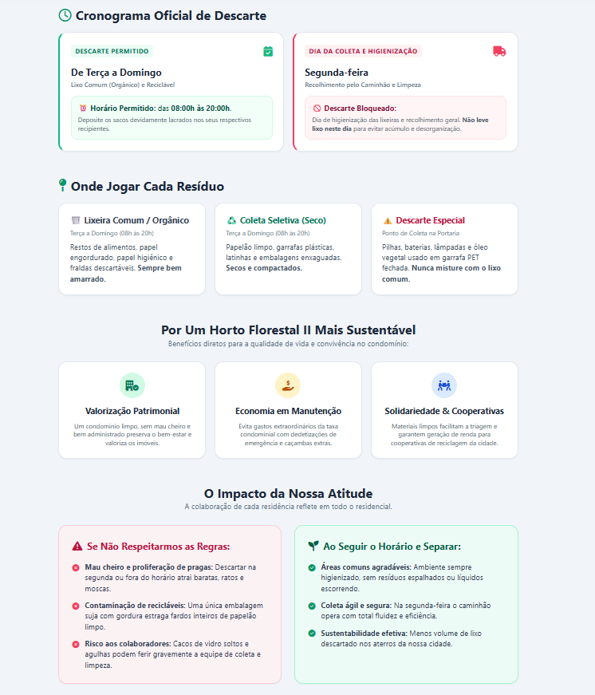

Cronograma Oficial de Descarte
De Terça a Domingo
Lixo Comum (Orgânico) e Reciclável
Deposite os sacos devidamente lacrados nos seus respectivos recipientes.
Segunda-feira
Recolhimento pelo Caminhão e Limpeza
Dia de higienização das lixeiras e recolhimento geral. Não leve lixo neste dia para evitar acúmulo e desorganização.
Onde Jogar Cada Resíduo
Terça a Domingo (08h às 20h)
Restos de alimentos, papel engordurado, papel higiênico e fraldas descartáveis. Sempre bem amarrado.
Terça a Domingo (08h às 20h)
Papelão limpo, garrafas plásticas, latinhas e embalagens enxaguadas. Secos e compactados.
Ponto de Coleta na Portaria
Pilhas, baterias, lâmpadas e óleo vegetal usado em garrafa PET fechada. Nunca misture com o lixo comum.
Por Um Horto Florestal II Mais Sustentável
Benefícios diretos para a qualidade de vida e convivência no condomínio:
Valorização Patrimonial
Um condomínio limpo, sem mau cheiro e bem cuidado preserva o bem-estar e valoriza os imóveis.
Economia em Manutenção
Evita gastos desnecessários com caçambas extras, consertos e dedetizações de emergência.
Solidariedade & Cooperativas
Materiais limpos facilitam a triagem e garantem renda para cooperativas de reciclagem da cidade.
O Impacto da Nossa Atitude
A colaboração de cada residência reflete em todo o residencial.
Se Não Respeitarmos as Regras:
- Mau cheiro e pragas: Descartar na segunda ou fora do horário atrai baratas, ratos e moscas.
- Contaminação de recicláveis: Uma única embalagem suja estraga fardos inteiros de papelão seco.
- Risco aos colaboradores: Cacos de vidro e objetos cortantes soltos causam acidentes graves.
Ao Seguir o Horário e Separar:
- Ambiente agradável: Residencial limpo, sem sacos rasgados ou líquidos escorrendo pelas vias.
- Coleta ágil e segura: Na segunda-feira o caminhão recolhe tudo com máxima velocidade.
- Sustentabilidade real: Menos volume de resíduos despejados em aterros da nossa região.
Panfleto Digital Informativo
Passe o mouse sobre a arte para ver o efeito 3D ou baixe para salvar no celular.

Ideal para compartilhar nos grupos de WhatsApp dos moradores.